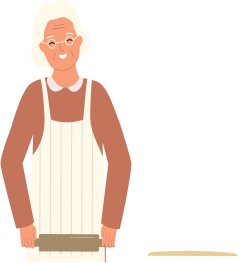

Documentation
Rencontre des voisins autour d’une table conviviale. Un plat à partager des liens à tisser.
Sommaire
Contexte Personae Problématique L’idée User Flow Les 2 étapes de prototypages Test Utilisateur
Contexte
En France, Quatre millions de personnes âgées de 60 ans et plus, vivent seules et d’autre rencontrent des difficultés pour accéder à une alimentation saine. La perte de mobilité, le manque de moyens financiers et l’isolement social rendent les courses et la cuisine plus compliquées. Ces difficultés peuvent avoir un impact sur la santé et le bien-être des seniors.
Quand ?
Au quotidien, chaque jour, au moment des repas.
Ou ?
Chez elle, à son domicile
Qui ?
Les personnes âgées vivant seules à domicile, comme Madame Simone.
Pourquoi ?
Parce que beaucoup de seniors vivant seuls : Manquent de motivation pour cuisiner. Manque de mobilité souffrent d’isolement social.

Simone
Femme âgée vivant seule
Age/Identifier le sexe 76 ans/Vit seule
Emplacement Ville moyenne en France
Situation familiale Sans enfants
Bio
Simone est une femme âgée qui vit seule. Elle a des difficultés à se déplacer et à organiser ses repas au quotidien.